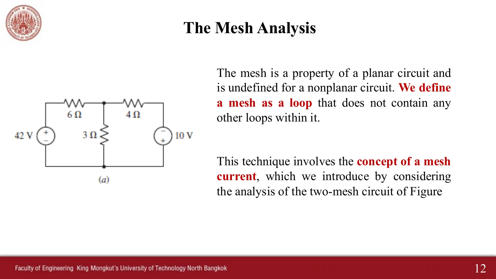
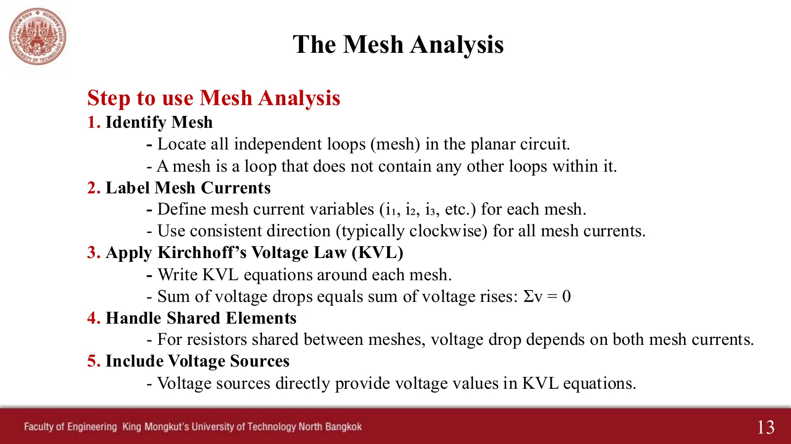
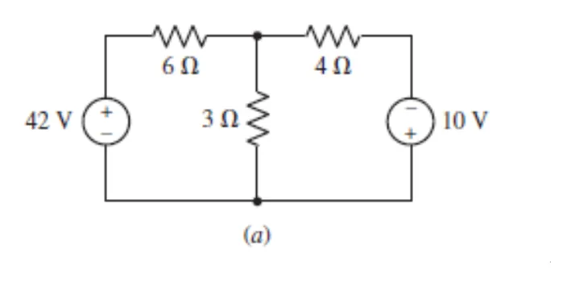
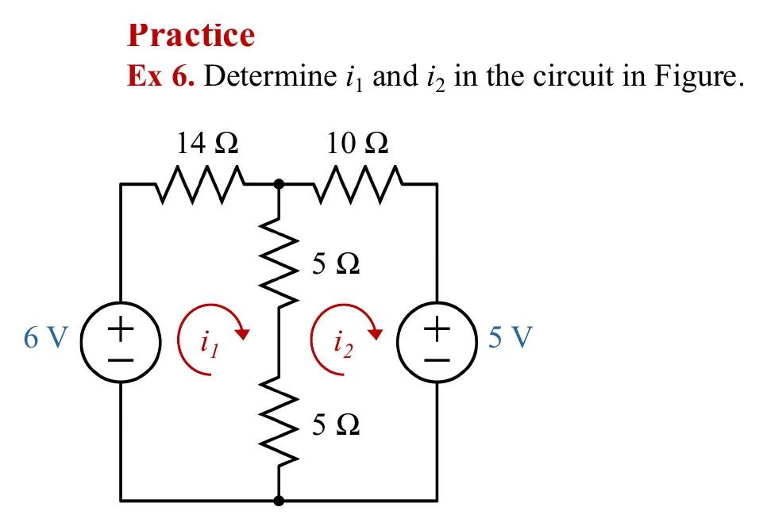
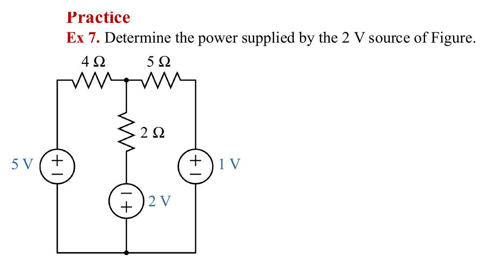
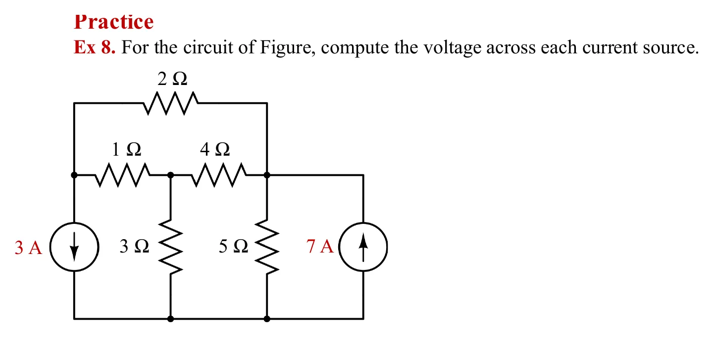
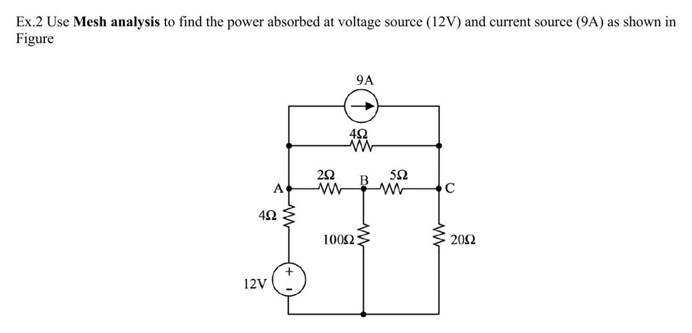

สไลด์หน้า 12: วิธีเมชใช้กับวงจรระนาบ (วาดได้โดยไม่มีสายไขว้กัน) เมช (mesh) คือลูปที่ไม่มีลูปอื่นอยู่ข้างใน เหมือนช่องหน้าต่างของรูปวงจร มีจำนวน \(M = B - N + 1\) เราให้แต่ละเมชมีกระแสเมชวนตามเข็มนาฬิกา แล้วเขียนกฎแรงดันของเคียร์ชอฟฟ์ (Kirchhoff's Voltage Law, KVL) รอบทุกเมช ในภาพจำลอง วงแหวนสีคือกระแสเมช ("?" ถ้ายังไม่รู้) ในขั้น KVL เส้นประเดินรอบเมชที่กำลังเขียน เริ่มที่มุมล่างซ้ายตามเข็มนาฬิกาแบบ Hayt อุปกรณ์บนทางเดินเรืองแสง เมื่อแก้เสร็จ ลูกปัดบนวงแหวนหมุนตามกระแสเมช (ทวนเข็มถ้าติดลบ) และจุดกระแสวิ่งในทุกกิ่ง หน้านี้มี 5 โจทย์ เรียงทีละข้อ: วงจรแนะนำในหน้า 12, Ex 6–8 และแบบฝึกหัด Ex.2
Slide p. 12: mesh analysis works on planar circuits (drawable with no wires crossing). A mesh is a loop with no other loop inside it, like a window pane of the drawing; there are \(M = B - N + 1\) of them. Each mesh gets a clockwise mesh current, and Kirchhoff's Voltage Law (KVL) is written round every mesh. In the simulations the coloured rings are the mesh currents ("?" while unknown); in a KVL step a dashed line walks round the mesh being written, from the bottom-left corner clockwise as Hayt does, with the parts on the path glowing. Once solved, the beads on each ring spin with its mesh current (anticlockwise if negative) and the current dots run in every branch. This page has 5 problems, one after another: the introduction circuit of p. 12, Ex 6–8 and exercise Ex.2.
หาเมชทุกช่อง → ตั้งกระแสเมชตามเข็มนาฬิกา → เขียน KVL (\(\sum V = 0\)) รอบแต่ละเมช → ตัวต้านทานที่ใช้ร่วมสองเมชเขียนด้วยผลต่างของกระแสเมช → แหล่งจ่ายแรงดันใส่ค่าตรง ๆ ตามขั้วที่เดินผ่าน วิธีนี้คู่กับวิธีโนดในหน้า 4.1: วิธีโนดใช้ KCL กับแรงดันโนด วิธีเมชใช้ KVL กับกระแสเมช
Find every mesh → give each a clockwise mesh current → write KVL (\(\sum V = 0\)) round each mesh → a resistor shared by two meshes uses the difference of the mesh currents → a voltage source goes in as its value, signed by the terminal you meet first. This is the partner of nodal analysis on page 4.1: nodal analysis uses KCL with node voltages, mesh analysis uses KVL with mesh currents.





